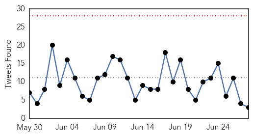

30 Day Trends
Web: 0 alerts, 0 warnings
Twitter: 0 alerts, 0 warnings
Top Articles:
- 1.000
- Ebola setback for Sierra Leone as capital records new cases
- 0.999
- Is Sierra Leone sleep walking into another round of Ebola epidemic?
- 0.999
- Malaria likely killed more people than usual during Ebola outbreak
- 0.999
- Guinea Quarantines Coastal Towns to End Ebola
- 0.999
- New Cases of Ebola Emerge in Sierra Leone
- 0.996
- Sierra Leone announces new curfew to halt Ebola
- 0.996
- Sierra Leone announces new curfew to halt Ebola
- 0.994
- Sierra Leone announces new curfew to halt Ebola
- 0.992
- Sierra Leone announces new curfew to halt Ebola - Sierra Leone
- 0.966
- Sierra Leone will jail Ebola law violators
- 0.911
- The UN will continue to support prevention and response efforts against Ebola in Guinea-Bissau-SRSG - Guinea-Bissau
- 0.878
- Aviation Stakeholders Cooperate To Tackle Communicable Diseases
- 0.873
- A survivor’s Ebola revenge mission
- 0.850
- Sierra Leone: Sierra Leone announces new curfew to halt Ebola
- 0.699
- “Akutay Will Not Succumb”…Akutay Western Area Chairman
- 0.623
- SLRSA Opens Outlet at Waterloo
- 0.603
- Kenema City Council Fails Parliament Again
- 0.508
- Land Grabbing Poses Challenges to the Administration of Justice in Sierra Leone
Top Tweets:
- 0.784
- Sierra Leone announces new curfew to halt Ebola - BDlive http://t.co/cT74g8GCXn ebola EVD
- 0.726
- Sierra Leone will jail Ebola law violators - Yahoo News http://t.co/IE5EcncElB ebola EVD
- 0.601
- Ebola screening at ports still ongoing – GHS - GhanaWeb http://t.co/hKZwW8p3ea ebola EVD
Web/News Articles

Tweets
Article Locations